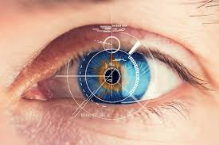

OnlyCode leverages advanced computer vision and audio analysis to automatically evaluate interviews, providing objective insights for modern hiring teams.

Monitor eye movements to evaluate focus, attention, and engagement throughout the interview process.
Analyze facial expressions, gestures, and posture to assess confidence and communication style.
Evaluate speech clarity, content relevance, and tone to measure the quality of candidate responses.